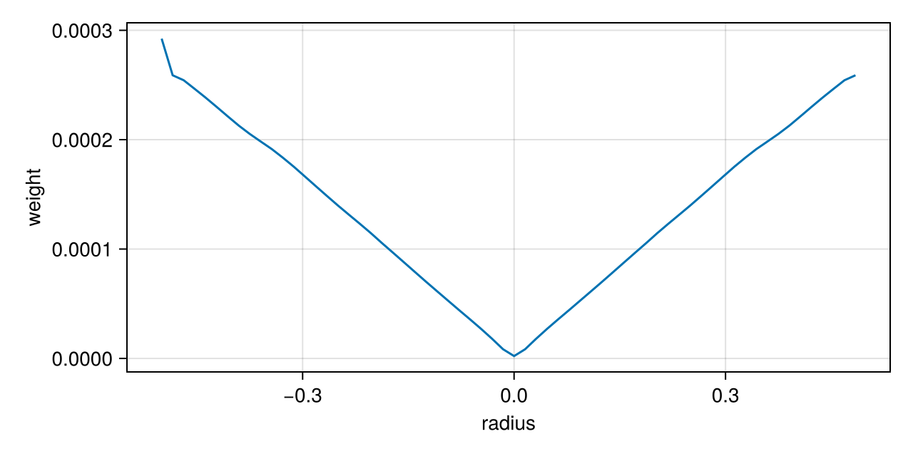
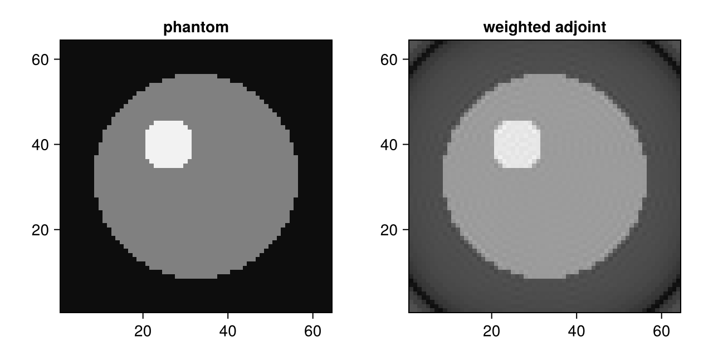

Density Compensation and Toeplitz Kernels
This guide shows how to compute sampling density compensation weights and the Toeplitz kernel of the normal operator $\bm{A}^{\mathsf{H}}\bm{A}$ with NFFTTools.jl. The package builds on the interface of AbstractNFFTs.jl and works with any implementation that provides the stage interface.
Compute density compensation weights
The adjoint NFFT is not the inverse of the NFFT. For nodes of non-uniform density, a weighted adjoint $\bm{A}^{\mathsf{H}} \operatorname{diag}(\bm{w})$ is a much better approximate inverse. sdc computes weights $\bm{w}$ with the iteration of Pipe and Menon. Here for a radial trajectory, which samples the centre of k-space much more densely than the edge:
using NFFT, NFFTTools, LinearAlgebra, CairoMakie
N = (64, 64)
nr, na = 64, 100
r = range(-0.5, 0.5; length=nr + 1)[1:end-1]
θ = range(0, π; length=na + 1)[1:end-1]
k = reduce(hcat, [[ρ * cos(t); ρ * sin(t)] for ρ in r, t in θ]);The weights depend on the window of the plan, not on its accuracy; a narrow window gives the best weights:
p = plan_nfft(k, N; W=4, σ=2.0)
w = sdc(p; iters=20)
fig = Figure(size=(640, 320))
ax = Axis(fig[1, 1]; xlabel="radius", ylabel="weight")
lines!(ax, r, reshape(w, nr, na)[:, 1])
fig
The weights grow linearly with the radius, as the analytical density compensation of a radial trajectory. A reconstruction of a phantom with the weighted adjoint:
phantom = [hypot(x - 32.5, y - 32.5) < 24 ? 1.0 + (hypot(x - 26, y - 40) < 6) : 0.0 for x in 1:64, y in 1:64]
data = p * complex.(phantom)
recon = adjoint(p) * (w .* data)
fig = Figure(size=(640, 320))
heatmap(fig[1, 1], phantom; colormap=:grays, axis=(aspect=1, title="phantom"))
heatmap(fig[1, 2], real.(recon); colormap=:grays, axis=(aspect=1, title="weighted adjoint"))
fig
Apply the normal operator with a Toeplitz kernel
The normal operator $\bm{A}^{\mathsf{H}}\bm{A}$ of an NFFT is a Toeplitz matrix, so it can be applied with two FFTs of twice the image size instead of an NFFT and its adjoint. calculateToeplitzKernel computes the kernel once (keyword arguments are passed to plan_nfft), convolveToeplitzKernel! applies it in place:
x = randn(ComplexF64, N)
λ = calculateToeplitzKernel(N, k; reltol=1e-10)
y = convolveToeplitzKernel!(copy(x), λ)
pt = plan_nfft(k, N; reltol=1e-10)
norm(y - adjoint(pt) * (pt * x)) / norm(y)5.13313611332314e-11This page was generated using Literate.jl.